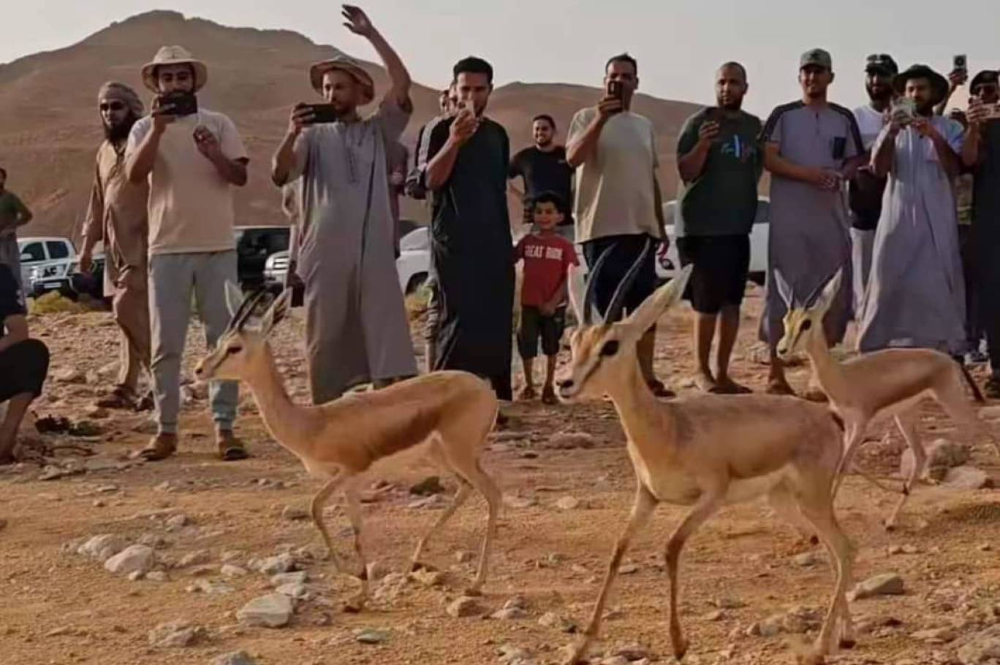

Fieldwork and community participation support gazelles’ return to the wild, following earlier releases in the city in May.
Al-Hayat wildlife protection association announced the release of a fifth batch of 20 gazelles in valleys around Bani Walid, according to a Libyan News Agency (LANA) report published on 22 November 2026. The initiative aims to support their return to natural habitats.
LANA said fieldwork involved travelling through rugged gullies and valleys. The association intends to continue its wildlife protection efforts with volunteers and supporters.
Earlier initiatives in Bani Walid
The city has seen earlier initiatives. On 17 May 2026, LANA reported that the local branch of the Libyan wildlife protection association released 28 gazelles. Its report described a community pact to protect gazelles, Barbary sheep and houbara bustards from hunting, linking the initiative to tackling the effects of poaching.
On 19 November, LANA published Al-Hayat’s announcement of a gazelle release event in the Tareeq al-Nahr–Jabiyat al-Nabaq area. Residents, hunters and nature enthusiasts were invited, highlighting the community’s role in protection.
Protection continues after release
IUCN guidelines on conservation translocations identify suitable habitat, risk assessment, community involvement and post-release monitoring as essential planning elements. Tracking survival and reproduction helps assess results and adapt protection measures.
Gazelles’ return to the wild therefore depends on continued habitat protection and monitoring of their establishment, alongside the effort invested in releasing them.
LANA: fifth batch — 22 November 2026 · LANA: release of 28 gazelles — 17 May 2026 · LANA: release event announcement — 19 November 2026 · IUCN/SSC: Guidelines for Reintroductions and Other Conservation Translocations, 2013
Photograph published with the report: Libyan News Agency (LANA). · 1